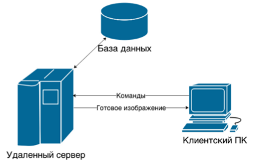

Удалённая визуализация
Крошенинников Артем, 633 гр.
Подгонка под наш проектор
Black -
White -
League -
Sky -
Beige -
Simple
Serif -
Blood -
Night -
Moon -
Solarized
Удаленная визуализация — это подход к визуализации, при котором клиент (устройство с относительно низкими вычислительными возможностями) используется для отображения массивов данных, визуализированных на одном или нескольких удаленных серверах визуализации.
Необходимость использования таких технологий отмечалась уже в 1999 году исследователями из Арагонской национальной лаборатории (Ян Фостер и другие).
Суперкомпьютерное моделирование позволяет:
- проводить качественные и точные расчеты
- повысить качество продукции
- уменьшить затраты на проектирование и разработку
- выйти на новый уровень качества услуг
Области:
- Машиностроение
- Моделирование биологических систем
- Медицина
- Физика
- Сфера развлечений (компьютерные игры)
Результат - визуальное представление данных, интересующих пользователя. Однако данные, получаемые в результате решения таких задач, могут представлять собой файлы, размер которых может достигать от десятков гигабайт до нескольких терабайт.
Возможный выход - удаленная визуализация
Удаленная визуализация
Удаленная визуализация данных позволяет реализовать процесс визуализации на базе удаленных центров обработки данных, передавая конечному пользователю непосредственный результат визуализации в виде изображений либо видеоряда.

Для использования систем удаленной визуализации, обычно, от клиентской машины не требуется наличия больших вычислительных мощностей. Однако необходимо высокоскоростное сетевое соединение для доступа клиента к ресурсам сервера удаленной визуализации. Сервер, в свою очередь, обеспечивает решение поставленных вычислительных задач, пре-рендеринг и рендеринг готового изображения
Рендеринг (rendering, визуализация)
в компьютерной графике, процесс преобразования цифровых моделей в визуализируемое представление — изображение.
Пре-рендеринг
Предварительные операции по подготовке виртуальной сцены, обеспечивающие оптимизацию дальнейшего процесса рендеринга. Различные системы удаленной визуализации могут выполнять различные действия с виртуальной сценой в ходе этапа пре-рендеринга. Например, при пре-рендеринге может происходить подготовка карты теней, предварительная отрисовка предыдущих либо следующих кадров, подготовка текстур модели и прочее.

Подходы:
- Чистая удаленная визуализация
- Смешанная удаленная визуализация
- Обработка данных на сервере
- Хранение данных на сервере

Подход «чистой удаленной визуализации» обеспечивает выполнение всех расчетов и обработку изображения на серверной части системы удаленной визуализации, с последующей передачей изображения клиенту. На клиенте никакой обработки результата не производится, обеспечивается только отображение результата с сервера.
Достоинства
- низкие требования к производительности клиентского устройства
- возможность гибкого применения алгоритмов сжатия полученных изображений/видео потока, включая алгоритмы с потерей данных
- возможность использования браузера в качестве клиентского ПО
- редко требует установки дополнительного программного обеспечения
Недостатки
- высокие требования к качеству Интернет-соединения для передачи видеопотока
- Необходима высокая надежность связи между клиентской и серверной машиной
Протоколы удаленного управления
- RFB (Remote Framebuffer Protocol)
- RRP (Remote Rendering Protocol
- RemoteFX
- ICA
Платформы и сервисы удаленной визуализации
Платформа удаленной визуализации — это промежуточное программное обеспечение, предоставляющее механизмы для визуализации данных на удаленных вычислительных системах. Платформы удаленной визуализации обеспечивают взаимосвязь между клиентскими приложениями и серверными, предоставляя доступ к графическим ускорителям и координируя взаимодействие команд от клиента серверу.
Платформы удаленной визуализации предоставляют средства для реализации систем удаленной визуализации включая пользовательский интерфейс для удаленной визуализации, сервисы управления сеансами визуализации (на базе виртуальных машин), интерфейсы для взаимодействия между визуализаторами и графическими ускорителями, протоколы удаленного управления.


Заключение
Технология удалённой визуализации на сегодняшний день достаточно хорошо изучена, предложено много решений, часть из них устарела, часть из них нова, но ещё не обкатана. Интересным проектов выглядит ParaViewWeb Framework, который позволяет внедрять методы удаленной визуализации в собственные приложения.
Спасибо за внимание
Вопросы?